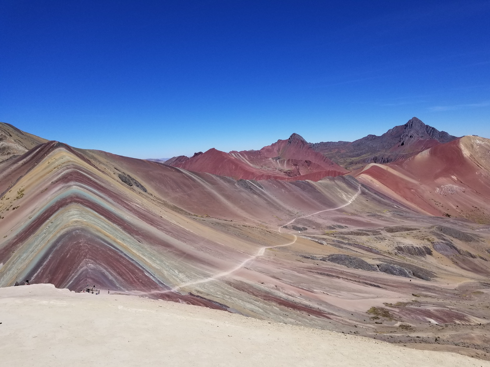

The photo above is the citadel of Machu Picchu. If you are interested in ancient architecture
and archaeology, this is a place you should visit. They were ahead of their time.
The picture above is of me after climbing to the top of Huayna Picchu, one of the mountains that surrounds the
citadel of Machu Picchu. It was a moderately difficult climb to the top (8,924 ft / 2,720 m)
but well worth the effort. You are required to have a guide with you.

The picture above is a view of Rainbow Mountain in the Andes of Peru in the Cusco Region.
My photo doesn't even come close to capturing the beauty you see in person.
It was a difficult climb to the top (17,060 ft, 5,200 m). The difficulty has less
to do with the terrain and more to do with the altitude. It is a good idea to try to get
acclimated to the altitude before you try to reach the highest point. Some people don't make it
to the summit due to altitude sickness. There are local Peruvian people that will
let you rent a horse if you prefer. They walk alongside you.